Тема 2 из 4 — «Менеджмент»
- Организация — объект менеджмента (урок 1).
- Менеджмент — понятие, цели и функции, функциональные области (это занятие).
- Организационные структуры.
- Среда (внутренняя и внешняя) и управленческие решения.
Занятие началось с окончания темы 1 — тресты сегодня и матрица Тичи. Страница собрана по записи и сверена с презентацией «Тема №2. Цели и функции менеджмента» (250 слайдов, три вопроса: понятие целей и функций; менеджмент в функциональных областях; содержание функций). Где запись и слайды расходятся, верным считается слайд — такие места помечены ⚠️. Третий вопрос — инструменты планирования, теории мотивации, контроль и TQM — на занятии почти не звучал; он разобран в разделе 8 по слайдам.
- Питер Друкер: «Самое важное — услышать то, что не было сказано». Менеджмент — ещё и искусство, интуиция.
- Фредерик Тейлор: каждый работник склонен филонить, делая вид, что работает на максимум.
- Уильям Деминг: «96 % проблем качества — ответственность системы, лишь 4 % — вина исполнителей». ➕ В книге Деминга «Выход из кризиса» — 94 % и 6 %.
«Я не то чтобы сторонник — это повод задуматься, кто прав и сколько там процентов».
Матрица Тичи: кого удержать в переменах
Окончание темы 1. «И в итоговом тестировании, и в моём тесте такие вопросы есть в разных вариантах».
| Ценности не совпадают | Ценности совпадают | |
|---|---|---|
| Высокая производительность | уволить, если вклад в компанию не уникален | удержать |
| Низкая производительность | уволить (красная зона) | обучить и удержать |
Два вопроса, которые преподаватель показал
- «Ситуация стремительно меняется; сотрудник поддерживает ценности, но низкопроизводителен» → обучить и удержать (правый нижний квадрат).
- «Сотрудник производительный, но не поддерживает ценности компании» → уволить, если его вклад не уникален (левый верхний). Если замены нет — удержать и переубедить.
- ГК «Трест» (Санкт-Петербург, по версии HeadHunter — в топ-10 работодателей отрасли): юрлица с таким ИНН нет, это бренд. Внутри — больше 20 строительных фирм из нескольких регионов со своими ИНН, управляемых из единого центра. Со слайда темы 1: в тресте предприятия «полностью утрачивают производственно-коммерческую самостоятельность и лишаются статуса юридического лица». Фирмы ГК «Трест» статус юрлица сохраняют, поэтому юридически это не трест, а группа под общим брендом.
- «Племобъединение Ярославское»: АО и около 20 сельхозорганизаций в одноимённой ассоциации. Вход — по качеству стада; интерес и целевой (селекция), и финансовый — субсидия «порядка 10 тысяч в год за корову». Кто-то с высокой продуктивностью отказывается: «мне это не надо».
🧭 Ноэль Тичи
Ноэль Тичи (род. 1946) — американский профессор менеджмента Мичиганского университета, в 1980-х руководил центром подготовки руководителей General Electric в Кротонвилле при Джеке Уэлче. Автор книг об организационной трансформации и лидерстве («Трансформационный лидер», «Двигатель лидерства»). ➕ Близкая матрица «ценности × результат» известна по практике GE и Уэлча: тех, кто даёт результат, но не разделяет ценности, Уэлч считал самыми опасными для культуры.
Миссия: маяк, до которого не доплыть
Сначала попробуйте сами — картинка с готовыми образами после.
Миссия вашей организации — в одном предложении
Не «заработать прибыль» и не «вырасти на 20 %». Ответьте: зачем ваша организация нужна обществу и людям, если бы деньги были лишь сопутствующим результатом? Запишите, затем проверьте по трём уровням ниже: есть ли в вашей фразе предназначение, ценности и хоть немного конкретики?
Со слайдов: миссия отвечает на вопрос, для чего организация существует; это её философия и стратегия бизнеса в долгосрочной перспективе, позиция бренда по отношению к миру и польза обществу.
Их часто путают. Видение — какой компанию представляют в отдалённом будущем; его можно воплотить и поставить следующие горизонты. Миссия — компас: глобальная цель, недостижимая в полном объёме, социально значимый ориентир — какую пользу компания приносит клиентам, сотрудникам и обществу.
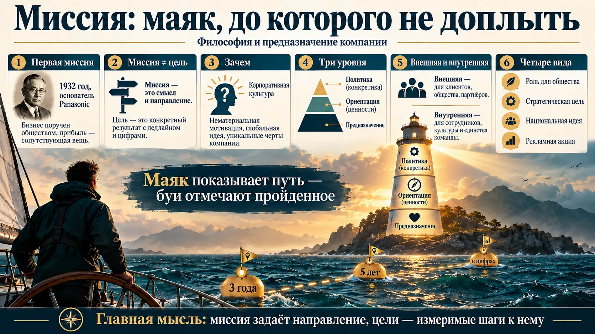
Что включить в хорошую миссию — шесть базовых составляющих со слайда
Область конкуренции; стратегический план; связь с компетентностью сотрудников; заинтересованные стороны — для кого это и кому будет хорошо; как это скажется на доходности; социальная ответственность бизнеса. На занятии группа угадывала компании по миссиям (ВТБ, Google, YouTube, РЖД, Первая грузовая компания) — «банки мы распознаём по цвету шрифта».
🧭 Коносукэ Мацусита и миссия Panasonic
Коносукэ Мацусита (1894–1989) — основатель Matsushita Electric (Panasonic). ➕ 5 мая 1932 года он собрал сотрудников и объявил «истинную миссию» компании: производить товары так же изобильно и дёшево, как вода из водопровода, чтобы избавить общество от бедности. Компания считает этот день своим «первым годом осознания миссии». Источник: сайт Panasonic Holdings, раздел «История компании».
Цели и SMART: задача, которую поймут одинаково
«Смысл методики — чтобы тот, кто ставит задачу, и тот, кто выполняет, понимали друг друга».
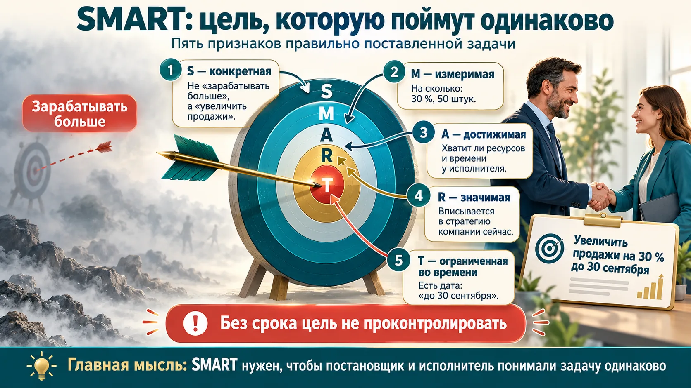
| Буква | Признак | Пример с занятия |
|---|---|---|
| S — specific | конкретная | не «зарабатывать больше», а «увеличить продажи» |
| M — measurable | измеримая | на сколько: 30 %, 50 штук |
| A — achievable | достижимая | хватит ли ресурсов у сотрудника или подразделения |
| R — relevant | значимая, актуальная | вписывается в стратегию: реклама поп-апов или чат-бота — что нужно сейчас |
| T — time-bound | ограниченная во времени | дата: «до 30 сентября»; без срока не проконтролировать |
- Завышенные ожидания — не оценены ресурсы и время исполнителя.
- Нерелевантность — цель не связана с задачами компании.
- Негибкость — по ходу появляются факторы, которые мешают или помогают; показатели можно корректировать.
- Нет мотивации.
📑 На слайдах — четыре разбора «правильно / неправильно». Типичная ошибка: «записать вебинары общей длительностью 2,5 часа» — нет M, не сказано, сколько вебинаров. Совет со слайда: если дедлайн больше трёх месяцев, разбейте цель на промежуточные этапы.
Задача, проект и электронная среда
Задача, которая выходит за рамки одного подразделения и требует ресурсов других, — уже проект. В системах задач (СБИС «Тензора», 1С, «Битрикс») поля SMART заложены: описание, срок, ответственный, документы. В «Тензоре» в начале месяца план расписывают по часам и защищают у руководителя, в конце месяца выполнение и премии видны автоматически.
«Если в университете такое внедрить завтра в 9 часов, в 10 меня сожгут во внутреннем дворе». Люди все разные: прежде чем автоматизировать, их надо обучить.
➕ Откуда SMART
Аббревиатуру предложил консультант Джордж Доран в статье «There's a S.M.A.R.T. way to write management's goals and objectives» (Management Review, 1981). У него буквы означали Specific, Measurable, Assignable (с ответственным), Realistic, Time-related; «Achievable» и «Relevant» появились в поздних пересказах.
Управление по целям: дерево целей, BSC и KPI
Чтобы стремиться к глобальной цели, её раскладывают на измеримые показатели.
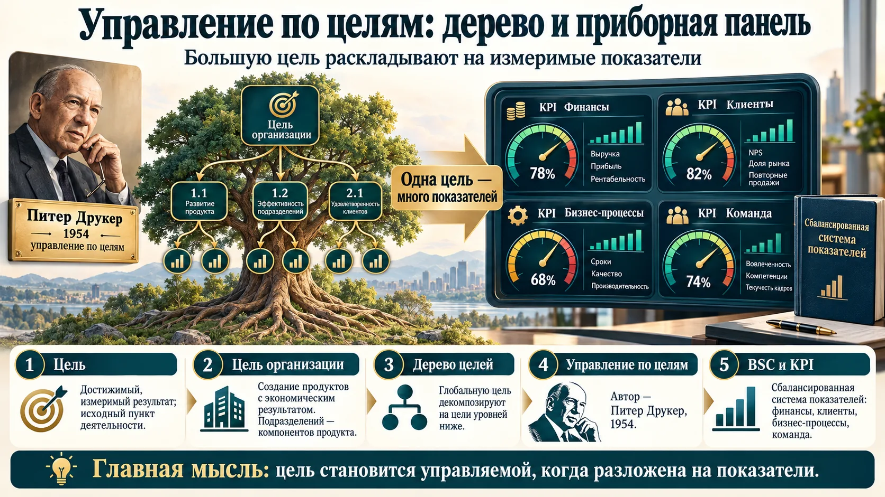
- Дерево целей — иерархическая совокупность целей: генеральная цель — «вершина», подцели первого, второго уровней — «ветви». Схема напоминает перевёрнутое дерево.
- Показатель — выраженная числом характеристика свойства объекта, процесса или решения. Показатель — объективные, но косвенные и односторонние данные о цели; односторонность снимает сбалансированная система показателей (ССП, BSC).
- Каплан и Нортон, книга «Сбалансированная система показателей. От стратегии к действию»: цепочка Цели → Показатели → Задачи → Инициативы.
- BSC переносит стратегические цели в операционное планирование и контроль. Суть — два положения: 1) одних финансовых показателей недостаточно; 2) BSC — не только индикатор состояния, но и система управления, связывающая стратегию топ-менеджмента с ежедневной работой. На уровне бизнес-процессов стратегию контролируют через KPI.
- Четыре группы показателей: финансовой отдачи на вложенные средства; внешнего окружения (клиенты); внутренних бизнес-процессов; способности компании к обучению и росту (на круговой схеме слайда — «команда»).
- Управление по целям (Management by Objectives, MBO) — согласование целей так, чтобы руководство и сотрудники разделяли их и понимали, что они значат для организации. Термин ввёл Питер Друкер в 1954 году в книге «The Practice of Management».
🧭 Питер Друкер, Каплан и Нортон
Питер Друкер (1909–2005) — американский экономист австрийского происхождения, «отец современного менеджмента». В книге «Практика менеджмента» (1954) описал управление по целям (management by objectives): цели согласуются с исполнителем, а результат оценивается по их достижению.
➕ BSC предложили Роберт Каплан и Дэвид Нортон (Harvard Business Review, 1992; книга «Сбалансированная система показателей», 1996). В оригинале четвёртый блок — learning and growth, «обучение и рост», как и в тексте слайда; на занятии и на круговой схеме слайда он назван «команда».
Управление по результатам: самолёт и центры ответственности
Вторая концепция — не противоположность, а дополнение к управлению по целям.
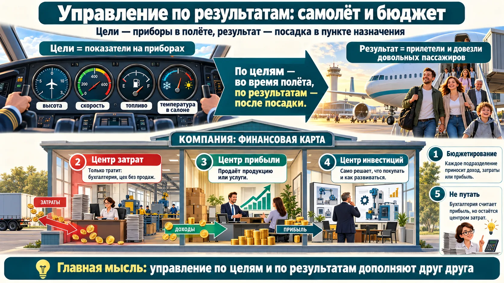
| Центр | За что отвечает | Пример с занятия |
|---|---|---|
| Центр затрат | только тратит ресурсы | бухгалтерия; цех, который только производит |
| Центр прибыли | продаёт продукцию или услуги — и доходы, и затраты | цех с собственными продажами |
| Центр инвестиций | сам распоряжается ресурсами: что покупать, как развиваться | подразделение, решающее, какое оборудование покупать |
Бухгалтерия — центр затрат, а не прибыли
«Некоторые даже в наших учебниках пишут, что это центр прибыли: прибыль там считают и отражают в отчётности. Но сама она отвечает только за затраты». ➕ В учебниках выделяют ещё центр доходов — например, отдел продаж, отвечающий за выручку, но не за себестоимость.
Менеджеру, как пилоту, нужны все «датчики» — показатели состояния среды и хода полёта. Но если пилот просто держит все приборы на заданном уровне, «совершенно неизвестно, куда он прилетит». Показатель не может быть самоцелью. Основное — цель: доставить такой-то груз в такую-то точку с такими-то затратами, то есть предвидимый конечный результат. Пилота оценивают не по тому, как он держал стрелки, а по конечному результату — срокам и затратам на доставку.
Управление по целям и управление по результатам — два разных полюса, их используют совместно. Управлять только по результатам, не планируя конечной цели, принципиально невозможно; при управлении по целям результаты (показатели) нужны для мониторинга.
Устно: «цель — это показатели на приборах, результат — прилететь». На слайде иначе: приборы — это показатели, а цель — пункт назначения с заданными сроками и затратами. Отвечайте по слайду; на картинке выше подписи исправлены по нему.
Что такое менеджмент: восемь значений
Управлять можно и автомобилем. Но менеджмент — это всегда люди.
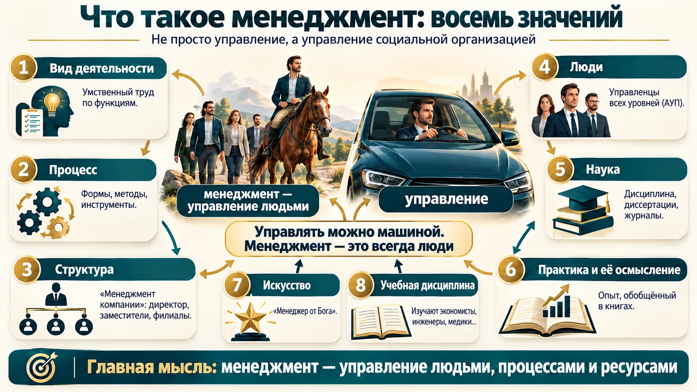
| № | Менеджмент как… | Смысл |
|---|---|---|
| 1 | вид деятельности | умственный труд, процесс по функциям; был всегда — у любого коллектива есть главный |
| 2 | процесс | формы, методы, инструменты, подходы в организации, экономике, стране |
| 3 | организационная структура | «менеджмент компании»: директор, заместители, филиалы |
| 4 | люди | управленцы на разных уровнях; в вузе — АУП |
| 5 | научная дисциплина | шифр специальности, диссертации, журналы |
| 6 | практика и её осмысление | опыт, обобщённый в книгах |
| 7 | искусство управления | «менеджер от Бога», талант, интуитивное понимание людей и процессов |
| 8 | учебная дисциплина | 📑 только на слайде: её изучают экономисты, инженеры, геологи, медики, социологи, агрономы |
На занятии прозвучало семь значений, на слайдах их восемь: восьмое — учебная дисциплина. «Научная дисциплина» (№ 5, область науки) и «учебная дисциплина» (№ 8, то, что изучают студенты) — разные значения.
- Как вид деятельности менеджмент существовал всегда — в трёх сферах: политической (порядок в группах), экономической (найти, произвести и распределить ресурсы), оборонительной (защита от врагов и зверей).
- Как процесс он включает функции (планирование, организация, мотивация, контроль), методы (экспертные, статистические, экономические) и средства (компьютеры, программы, интернет).
- Друкер: менеджмент обозначает функцию, но также и людей, её выполняющих; социальное и должностное положение; учебную дисциплину и область научного исследования.
Школы менеджмента: от лопаты до ИИ
Четыре периода; сейчас — информационный, с 1960 года. Четыре школы XX века. «Школа» — не вывеска на двери: последователи потом обобщили и назвали.
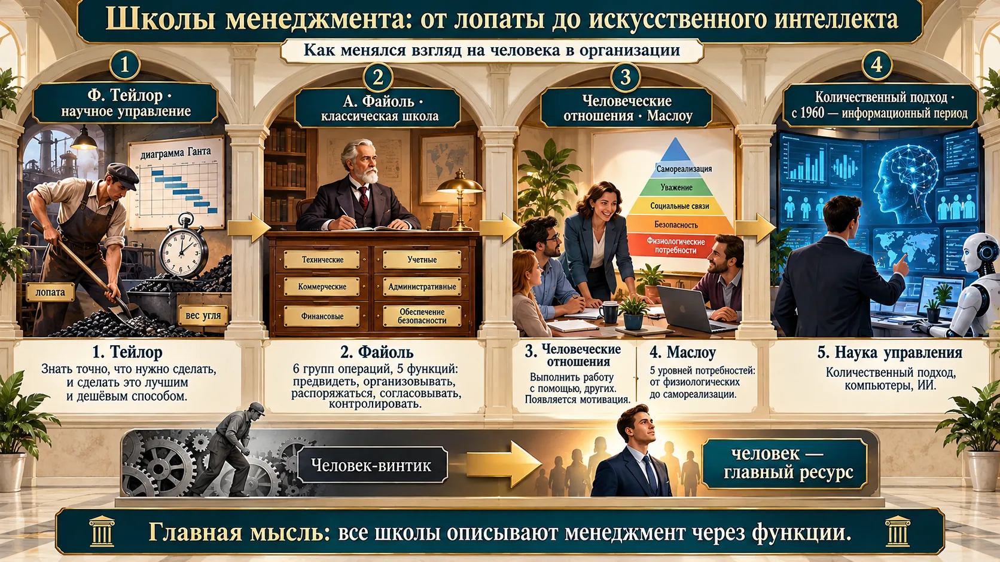
| Школа | Кто | Главное |
|---|---|---|
| Научное управление (1885–1920) | Фредерик Тейлор — основоположник; Фрэнк и Лилиан Гилбрет, Генри Гант | «Искусство знать точно, что нужно сделать, и как сделать это самым лучшим и дешёвым способом». Хронометраж операций, лопата под вес угля, отделение управленческого труда от исполнительского; диаграмма Ганта. 4 группы функций Тейлора: выбор цели, выбор средств, подготовка средств, контроль результатов |
| Классическая (административная) (1920–1950) | Анри Файоль — второй основоположник | 6 групп операций: технические, коммерческие, финансовые, охрана имущества, счётные, административные. 5 функций: предвидеть, организовывать, распоряжаться, согласовывать, контролировать |
| Человеческих отношений, она же неоклассическая (1930–1950) | Мэри Паркер Фоллетт, Элтон Мэйо; позже Маслоу | Человеческий фактор — главный элемент эффективности. Фоллетт: менеджмент — «обеспечение выполнения работы с помощью других лиц». Мэйо: чёткие операции и хорошая зарплата не всегда повышают производительность — давление коллег по группе бывает сильнее указаний и денег. Появляется функция мотивации. Пирамида из 5 уровней потребностей |
| Количественный подход, наука управления (с 1950) | Рассел Акофф, Людвиг фон Берталанфи, Норберт Винер | Исследование операций — применение методов научного исследования к операционным проблемам; модель упрощает реальность. Родилось во Вторую мировую: англичане искали, как лучше использовать немногие истребители и ПВО. Сегодня — компьютеры, ИИ, четвёртая промышленная революция (индустрия 4.0) |
- Тейлор и Файоль — основоположники менеджмента как науки; оба выделяли функции.
- Классики видели человека «винтиком», школа человеческих отношений — главным ресурсом.
- Пирамида Маслоу: каждый следующий уровень — после предыдущего; вершины самореализации, по мнению автора, достигают «около 2 % людей».
- Сейчас — информационный период (с 1960), этап — количественный подход, наука управления.
Четыре периода развития менеджмента
| Период | Представители |
|---|---|
| I — древний (10 000 лет до н. э. — XVIII век) | Сократ, Платон, Александр Македонский |
| II — индустриальный (1776–1890) | Адам Смит, Роберт Оуэн, Чарльз Бэббидж |
| III — систематизации (1860–1960) | Тейлор, Файоль, Генри Форд, Маслоу |
| IV — информационный (с 1960) | Акофф, Стаффорд Бир, Адель Голдберг, Майкл Портер, Питер Друкер |
Файоль: «управлять — вести предприятие к цели, наилучшим образом используя его ресурсы». Маслоу делил потребности на дефицитарные (1–2 уровни: удовлетворил — перестают действовать) и ростовые (3–5: удовлетворение их только усиливает); пока не удовлетворён низший уровень, высший не мотивирует.
На слайде лопата Тейлора — «ёмкостью до 21 фута (около 8,6 кг)». Правильно — 21 фунт, около 9,5 кг. Фут — мера длины.
🧭 Тейлор, Файоль, Маслоу — кто это
Фредерик Тейлор (1856–1915) — американский инженер, начинал рабочим на заводе Midvale Steel, дошёл до главного инженера. Книга «Принципы научного управления» (1911). Лопату подбирал под оптимальный груз — около 21 фунта (~9,5 кг) за бросок. ➕ Спортсмен: в 1881 году вместе с Кларенсом Кларком выиграл первый чемпионат США по теннису в парном разряде; на Олимпиаде-1900 играл в гольф. Диаграмму назвали по имени его соратника Генри Ганта.
Анри Файоль (1841–1925) — французский горный инженер, директор угольной компании. Книга «Общее и промышленное управление» (1916).
Абрахам Маслоу (1908–1970) — американский психолог; иерархия потребностей — статья «Теория человеческой мотивации» (1943): физиологические → безопасность → принадлежность → уважение → самоактуализация. ➕ На слайде курса — «не более 2 % людей»; сам Маслоу в поздних работах оценивал долю самоактуализирующихся менее чем в 1 %.
Мэри Паркер Фоллетт (1868–1933) — американский социолог и теоретик управления; Элтон Мэйо (1880–1949) — австралийско-американский психолог, руководитель Хоторнских экспериментов (1924–1932) на заводе Western Electric.
Четыре функции менеджмента и их содержание
Авторы называют 10–12 функций, «но если разобраться, добавлять ничего не надо». Вопрос 3 темы — инструменты каждой функции — на занятии почти не звучал и разобран по слайдам.
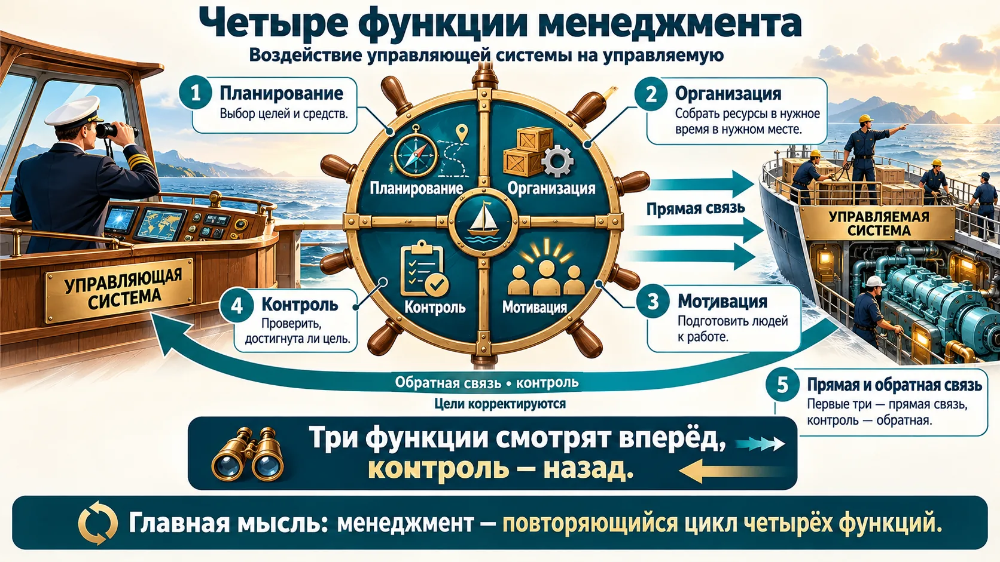
| Функция | Что делает | У Тейлора |
|---|---|---|
| Планирование | выбор целей и средств | выбор цели, выбор средств |
| Организация | собрать ресурсы в нужное время в нужном месте | подготовка средств |
| Мотивация | подготовить людей к работе | подготовка «человеческих» средств |
| Контроль | проверить результат — обратная связь | контроль результатов |
Анализ, учёт, координацию, инновации иногда выделяют отдельно — но «классических» функций четыре. Если в тесте спрашивают о функции обратной связи — это контроль.
Общие и частные функции
Функция управления — вид деятельности, основанный на разделении и кооперации управленческого труда, однородный, сложный и стабильный по воздействию на объект. Выделенные по содержанию — общие (основные): планирование, организация, мотивация, контроль. Выделенные по другим признакам — частные (специальные):
- по организационной роли — функции интеграции (объединения) и дифференциации (разделения, специализации);
- по направленности — интрафункции (на внутреннюю среду) и инфрафункции (на внешнюю);
- по сфере развития объекта — управление экономическими, социально-психологическими, организационными, технологическими процессами;
- по этапу производства — подготовка, процесс, обеспечение производства, реализация продукции;
- по масштабу времени — стратегическое, текущее (тактическое), оперативное управление;
- по этапу процесса управления — целеполагание, определение ситуации, определение проблемы, решение.
Интрафункции направлены внутрь организации, инфрафункции — на внешнюю среду (так на слайде курса). Запомнить: «интра» — как «интранет», внутренняя сеть.
8.1 · Планирование
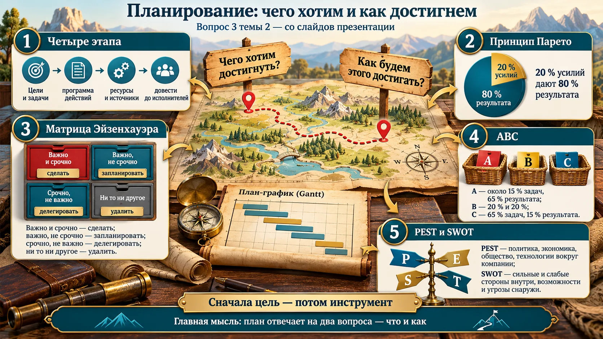
- Виды: по обязательности — директивное (строгие обязательные требования) и индикативное (рекомендательное); по срокам — краткосрочное (до 1 года), среднесрочное (1–5 лет), долгосрочное (более 5 лет); по содержанию — стратегическое, тактическое, оперативно-календарное, бизнес-планирование; по охвату — общее и частичное.
- Методы: правило Парето, ABC-анализ, матрица Эйзенхауэра, хронометраж, диаграмма Ганта, SMART, OKR, списки целей и задач.
- Принцип Парето (80/20): 20 % усилий дают 80 % результата. Вильфредо Парето (1848–1923) — итальянский инженер, экономист и социолог, один из основоположников теории элит.
- ABC-анализ: A — наиболее важные, не более 15 % задач и около 65 % результата; B — около 20 % задач и 20 % результата; C — около 65 % задач и лишь 15 % результата. В связке с XYZ-анализом (стабильность спроса) его применяют к ассортименту.
- Матрица Эйзенхауэра (важность × срочность): важно и срочно — сделать; важно, не срочно — запланировать; срочно, не важно — делегировать; не важно и не срочно — удалить. Дуайт Эйзенхауэр (1890–1969) — генерал армии, 34-й президент США.
- Хронометраж — измерение времени на задачу или операцию. Диаграмма Ганта — задачи по вертикали, шкала времени по горизонтали, отрезки — начало, конец и длительность задачи. OKR (Objectives and Key Results) — цели и ключевые результаты; придуман в Intel в 1970-х, распространился в Google и Amazon.
- PEST-анализ — инструмент долгосрочного планирования: факторы внешней среды Political, Economic, Social, Technological. Автор — профессор Гарварда Фрэнсис Агилар, 1967 (название ETPS). Расширения: PESTEL (+экология, право), STEEPLE, LONGPEST и др.
- SWOT: сильные (Strengths) и слабые (Weaknesses) стороны — внутри компании; возможности (Opportunities) и угрозы (Threats) — снаружи. Аббревиатура впервые прозвучала в 1963 году в Гарварде у Кеннета Эндрюса.
PEST — только внешняя среда (макроокружение). SWOT — и внутренняя (S, W), и внешняя (O, T). Матрица Эйзенхауэра — задачи (важность × срочность), 9-box и Тичи — люди.
Неделя руководителя по Эйзенхауэру: всё «важно и срочно» — пожары; если таких дел больше половины, значит квадрат «важно, не срочно» (планирование, обучение, профилактика) заброшен. По Парето найдите 20 % клиентов или задач, которые дают 80 % результата, и защитите для них время в календаре.
8.2 · Организация
8.3 · Мотивация
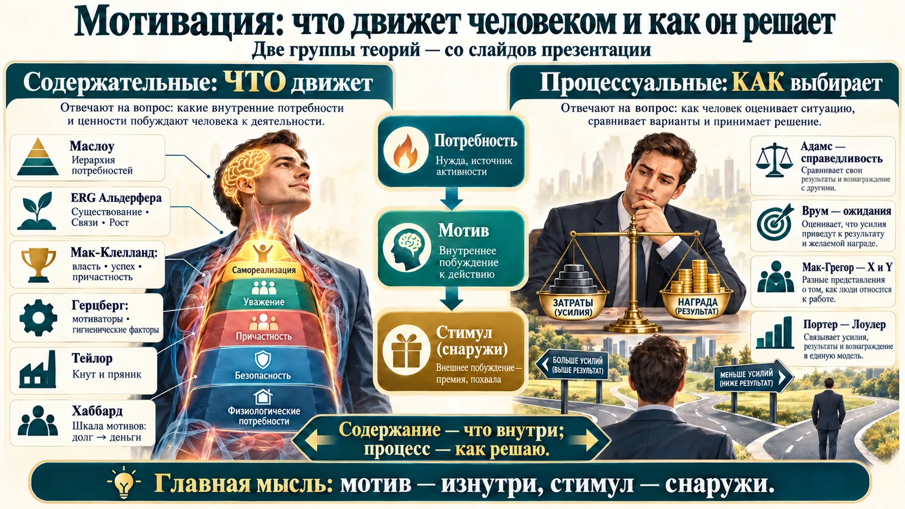
| Группа | Суть | Теории |
|---|---|---|
| Содержательные | что движет: определить мотивы и внутренние потребности | Маслоу — иерархия; ERG Альдерфера — существование, связи, рост; Мак-Клелланд — власть, успех, причастность; Герцберг — мотиваторы (успех, признание, рост) и гигиенические факторы (условия, зарплата, отношения); Тейлор — кнут и пряник; Хаббард — шкала мотивов: долг, убеждённость, личная выгода, деньги |
| Процессуальные | как человек выбирает поведение, анализируя окружение | Адамс — справедливость: сравниваю свои усилия и награду с коллегами; Врум — ожидания: затраты → результат → вознаграждение → его ценность (если хоть одно звено = 0, мотивации нет); Мак-Грегор — теория X (контроль) и Y (доверие); Портер — Лоулер — синтез ожиданий и справедливости |
Герцберг и Мак-Клелланд — содержательные, Мак-Грегор — процессуальная (так в слайдах курса). У Герцберга гигиенические факторы сами не мотивируют, но их нехватка вызывает недовольство. Мотив — изнутри, стимул — снаружи.
8.4 · Контроль
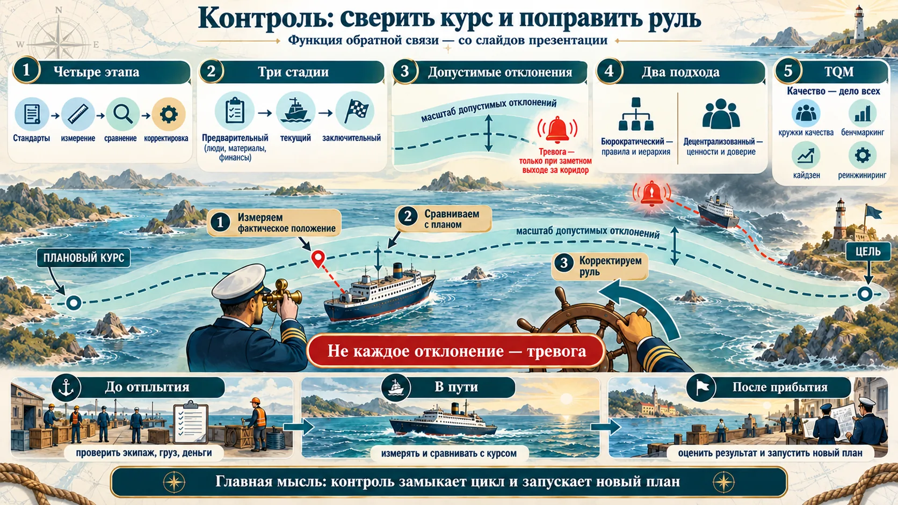
- Стадии: предварительный (превентивный) — в трёх областях: человеческие, материальные, финансовые ресурсы; текущий (сопутствующий); заключительный (по результатам).
- Масштаб допустимых отклонений — диапазон, в пределах которого отклонение от плана не вызывает тревоги. Система контроля должна срабатывать только при заметных отклонениях.
- Подходы: бюрократический — правила, политика, иерархия, документы, системы премирования; децентрализованный — ценности, традиции, общие воззрения и доверие.
- TQM (комплексное управление качеством) — стратегия, в которой качество — дело всех: клиент всегда прав, внутренние потребители так же важны, как внешние; на предложение работника откликаются в течение недели. Методы: кружки качества, наделение полномочиями (empowerment), бенчмаркинг, аутсорсинг, сокращение цикла, кайдзен (непрерывные улучшения), реинжиниринг — радикальное перепроектирование бизнес-процессов: фундаментальность, радикальность, стремительность.
- Эффективный контроль: связь со стратегией, ориентация на результаты, принятие участниками, баланс объективных и субъективных данных, точность, гибкость, своевременность, экономичность.
Кайдзен — маленькие непрерывные шаги. Реинжиниринг — радикальная перестройка процесса с нуля ради резкого скачка. Оба — методы TQM на слайде курса.
Менеджмент в функциональных областях
Функции те же — планирование, мотивация, контроль, — но с особенностями в каждой сфере. Дальше по программе — отдельные дисциплины.
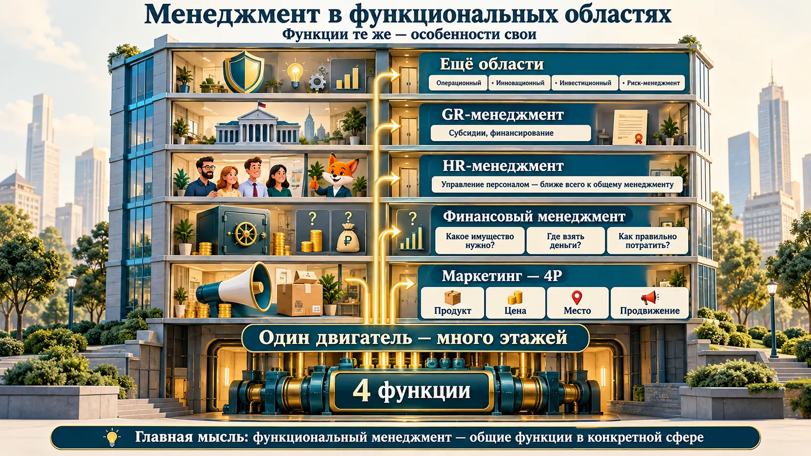
| Область | Главное с занятия |
|---|---|
| Маркетинг | концепция 4P: продукт (основа), цена, место, продвижение. 📑 Цикл: анализ рынка → планирование → реализация → контроль по ключевым показателям (выручка, новые клиенты, доля рынка, стоимость привлечения, средний чек, конверсия, рентабельность) |
| Финансовый менеджмент | какое имущество нужно; где взять деньги (свои, кредиты, займы); как правильно потратить, чтобы ресурсы были вовремя. Результат — ликвидность, платёжеспособность, финансовая устойчивость. 📑 Любая коммерческая деятельность — четыре действия: привлечь средства, приобрести активы, прибыльно эксплуатировать их, вернуть привлечённое. Важная часть — финансовый анализ |
| HR-менеджмент | управление персоналом — ближе всего к общему менеджменту. 📑 Семь функций: рекрутмент, кадровое администрирование, адаптация, компенсации и льготы (C&B), обучение и развитие, оценка и развитие, HR-брендинг |
| GR-менеджмент | взаимодействие с органами власти: субсидии, финансирование ремонта |
| Ещё | операционный, инновационный и экономический, управление ВЭД, антикризисный, риск-менеджмент, ситуационный |
Маркетинг персонала: работа как продукт
- С 1970-х маркетинговый подход применяют к рынку труда: товар — рабочее место, которое должно быть конкурентоспособным для соискателя. Два понимания: философия организации (к персоналу — «как к клиенту») и функция HR-службы (покрытие потребности в персонале).
- EVP (Employee Value Proposition) — ценностное предложение работодателя: за что специалисты придут и останутся. 6 блоков, 39 атрибутов: компания, люди, работа, вознаграждение, возможности, условия труда.
- 4P персонала: продукт — рабочее место; цена — цена персонала; место — сам работодатель или посредники (агентства, биржи труда); продвижение — продвижение рабочих мест и бренда работодателя. 7P Ахмеда и Рафика добавляют физические свидетельства, процесс и участников; «цена» там — психологические издержки изменений.
- Метрики HR: сроки и стоимость закрытия вакансии, бюджет на персонал, сроки адаптации, доля прошедших испытательный срок, вовлечённость, удовлетворённость, текучесть, укомплектованность штата, доля выросших внутри.
➕ Откуда 4P
Комплекс маркетинга «4P» (product, price, place, promotion) предложил Эдмунд Джером Маккарти в учебнике «Базовый маркетинг» (1960), развивая идею «маркетинг-микса» Нила Бордена.
9-box: кто есть кто в команде
Концепция HR-менеджмента «говорят, универсальная»: оценка, премия, кадровый резерв.
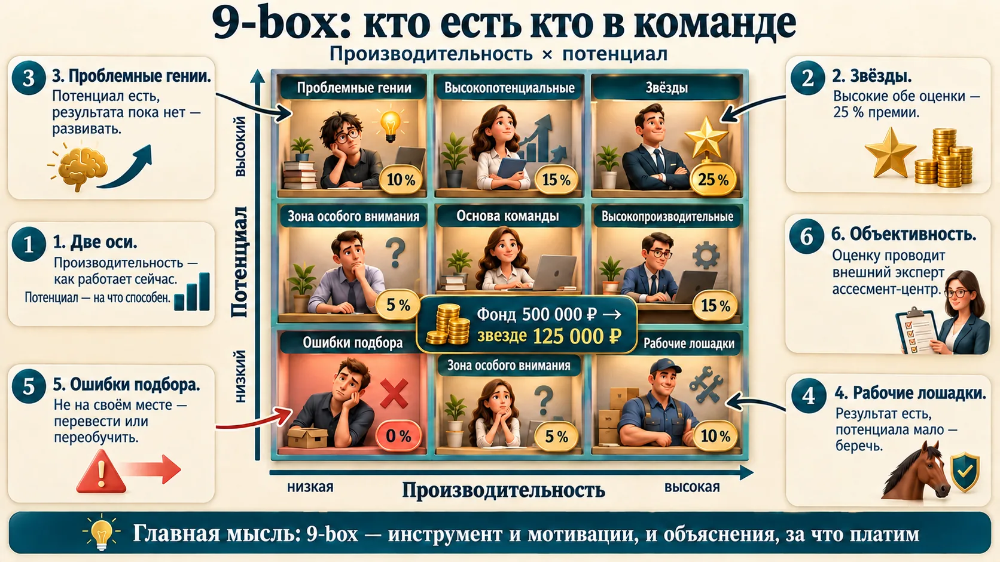
| Коробка | Кто | Доля премии |
|---|---|---|
| Звёзды | высокие производительность и потенциал | 25 % |
| Высокопотенциальные, высокопроизводительные, основа команды | высокий одно и средний другое; оба средние | по 15 % |
| Проблемные гении | потенциал высокий, производительность низкая (новички) | 10 % |
| Рабочие лошадки | производительность высокая, потенциал низкий («всё на них взвалили») | 10 % |
| Зоны особого внимания | одно низкое, другое среднее | по 5 % |
| Ошибки подбора | оба низкие — не на своём месте: перевести или переобучить | 0 |
Девять сотрудников (ФИО вымышлены), эксперт ассесмент-центра оценил каждого по пятибалльной шкале. Свободный фонд премии — 500 000 ₽. По одному человеку в каждой коробке: звезда получает 25 % — 125 000 ₽, три «пятнадцатипроцентных» — по 75 000, проблемный гений и рабочая лошадка — по 50 000, зоны особого внимания — по 25 000, ошибка подбора — 0. В тренажёре — кнопка «Пример с занятия».
- 9-box — люди: производительность × потенциал, 9 клеток.
- Бостонская матрица (BCG) — 4 квадрата, для продуктового портфеля в маркетинге.
- Матрица Эйзенхауэра — задачи: важность × срочность.
- Матрица Тичи — люди в переменах: ценности × производительность (раздел 1).
Шкалу можно сделать своей
Не обязательно баллы «на глаз»: выполнил все задачи в срок — пятёрка, 8 из 10 — четвёрка. Потенциал оценивать сложнее: «вызываем Марью Ивановну — возьмёте новую задачу?» — «У меня своих куча». Главное — 9-box не только инструмент мотивации, но и инструмент объяснения, за что и как сгруппированы сотрудники. Слушатели спорили: «если больше платим звёздам, все будут стремиться в звёзды» — «есть те, кому сколько ни плати, не хочет».
Что выучить к экзамену
Отмечайте пункт, когда можете объяснить его своими словами без подсказки. Отметки сохраняются в браузере.
Второе занятие готово к экзамену.
Проверьте себя
Двадцать четыре вопроса в формате экзаменационного теста; 17–24 — по слайдам темы 2. После ответа — правильный вариант и разбор.
1. 🎯 Ситуация стремительно меняется. Сотрудник поддерживает ценности компании, но низкопроизводителен. По матрице Тичи его нужно…
2. 🎯 Сотрудник производительный, но не поддерживает ценности компании. По матрице Тичи…
3. Чем миссия отличается от цели?
4. Впервые миссию компании сформулировал…
5. Какой уровень миссии раскрывает ценности компании?
6. Через какую часть миссии формируется корпоративная культура?
7. Буква R в SMART означает, что цель…
8. Какая формулировка соответствует SMART?
9. Автор концепции управления по целям (1954):
10. Блоки сбалансированной системы показателей по лекции:
11. Бухгалтерия с точки зрения управления по результатам — это…
12. Чем менеджмент отличается от управления?
13. Определение «искусство знать точно, что нужно сделать, и как сделать это самым лучшим и дешёвым способом» принадлежит…
14. Анри Файоль выделил функции управления:
15. Какая функция менеджмента — функция обратной связи?
16. По 9-box сотрудник с высокой производительностью и низким потенциалом — это…
17. 📑 Сколько значений термина «менеджмент» приведено на слайдах курса?
18. 📑 По слайду курса: пилот держит все приборы в норме. Что в этой аналогии цель?
19. 📑 Функции, направленные на внешнюю среду организации, называются…
20. 📑 Важная, но несрочная задача по матрице Эйзенхауэра —
21. 📑 PEST-анализ оценивает…
22. 📑 Какая теория мотивации относится к процессуальным?
23. 📑 Внешнее побуждение к активности работника (премия, похвала) — это…
24. 📑 Правильный порядок этапов управленческого контроля:
Отвечено: 0 / 24
Шпаргалка: менеджмент за одну минуту
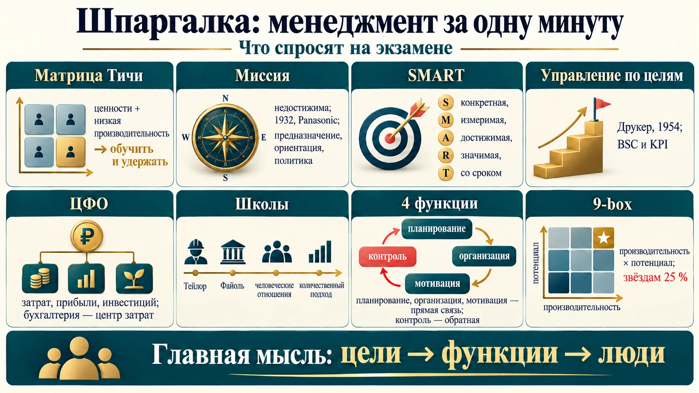
- Матрица Тичи: разделяет ценности, но слаб — обучить и удержать; силён, но против ценностей — уволить, если вклад не уникален.
- Миссия недостижима и задаёт направление; цель достижима и измерима. Первая миссия — Panasonic, 1932.
- SMART: конкретная, измеримая, достижимая, значимая, со сроком.
- Управление по целям — Друкер, 1954; BSC и KPI. По результатам — бюджеты и ЦФО. Дополняют друг друга.
- Бухгалтерия — центр затрат; центр прибыли — тот, кто продаёт.
- Менеджмент — управление социальной организацией; восемь значений слова (по слайдам).
- Тейлор и Файоль — основоположники; школа человеческих отношений принесла мотивацию; сейчас — количественный подход.
- Четыре функции: планирование, организация, мотивация — прямая связь; контроль — обратная.
- 9-box: производительность × потенциал; звёздам 25 %, ошибкам подбора — 0.
- Инструменты функций: Парето 80/20, Эйзенхауэр (сделать, запланировать, делегировать, удалить), PEST — внешняя среда; теории мотивации — содержательные (что) и процессуальные (как); контроль — стандарт, измерение, сравнение, коррекция.